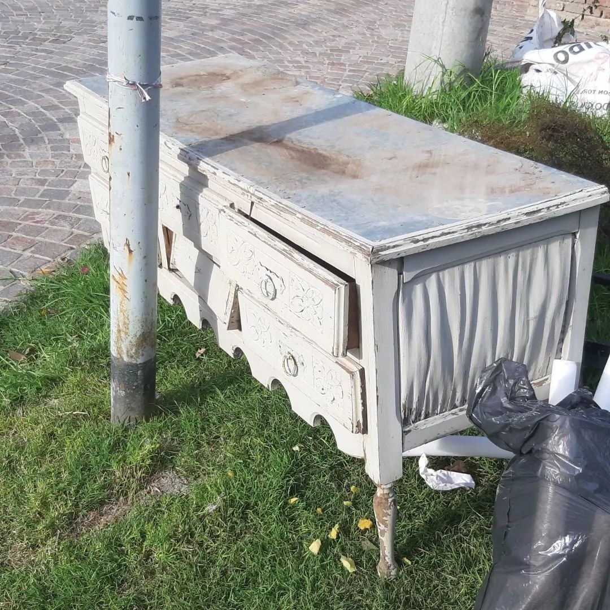
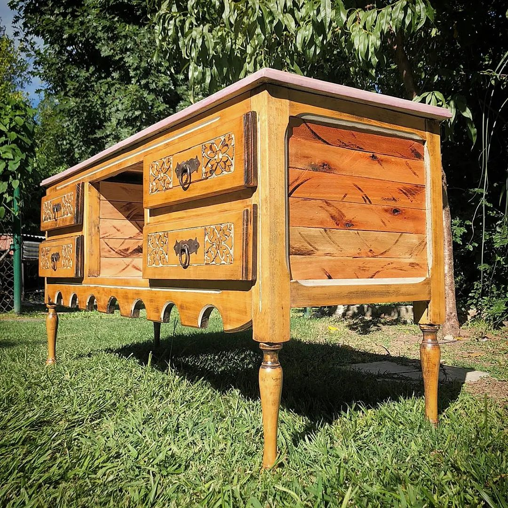

¿Qué es el Diseño Circular?
El Diseño Circular es una metodología de diseño que busca crear productos y procesos que sean sostenibles y respetuosos con el medio ambiente a lo largo de todo su ciclo de vida. Se trata de un enfoque holístico que tiene en cuenta la reducción de residuos, la eficiencia en el uso de los recursos, la reutilización y el reciclaje, entre otros aspectos.
Se busca la selección de materiales y técnicas de restauración que sean duraderos y que reduzcan al mínimo la generación de residuos, así como también la promoción de prácticas de consumo responsable, como la reparación y el reciclaje de productos, para prolongar su vida útil y evitar su descarte prematuro.
Se busca la selección de materiales y técnicas de restauración que sean duraderos y que reduzcan al mínimo la generación de residuos, así como también la promoción de prácticas de consumo responsable, como la reparación y el reciclaje de productos, para prolongar su vida útil y evitar su descarte prematuro.

